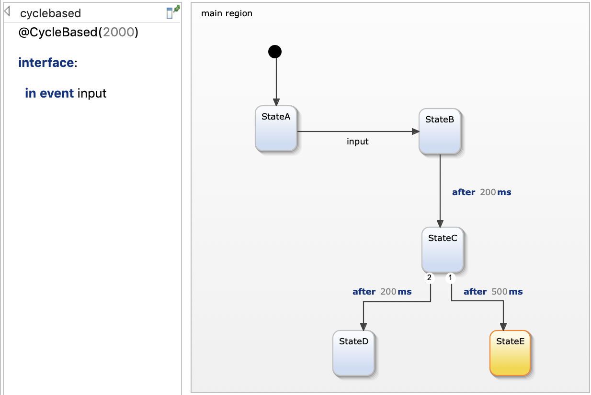
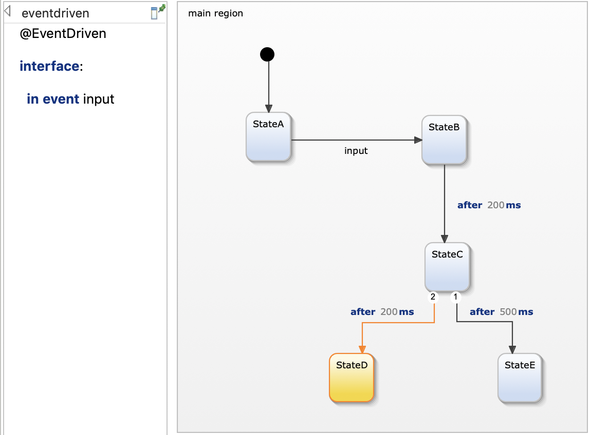

This example demonstrates the two different execution schemes of YAKINDU statecharts: event-driven and cycle-based execution. For more details, please refer to chapter Execution schemes in our documentation.
The state machine can define one of two different execution schemes:
You can select the execution scheme in the definition section by either using the @CycleBased or @EventDriven annotation. If nothing is specified, the cycle-based execution scheme with a time interval of 200 milliseconds is used for simulation.
In the following, the difference between the two execution schemes will be explained on a simple example model.
In the cycle-based execution scheme, a run-to-completion step is processed in regular time intervals. For example, the annotation @CycleBased(2000) means that a cycle is invoked every 2000 milliseconds. In the example below, this means that it might take up to two seconds after the input event has been raised for the statechart to process it and activate StateB. Same holds for time events. To illustrate this, StateC has two outgoing transitions with different time triggers. With a cycle period of 2 seconds, both time triggers are valid. The state machine will then take the higher prioritized transition, which in this case is the one to StateE. Changing the cycle period from 2000 to 200 milliseconds will cause StateD to be activated as the run-to-completion cycle is executed before the 500ms trigger is raised.

Please note that it is the responsibility of the client code to implement the cycle loop. The generated state machine code provides a runCycle() method that needs to be called periodically.
In the event-driven execution scheme, incoming events and time events are processed immediately. Consequently, when raising the input event, the statechart instantly activates StateB. StateC is activated after 200 milliseconds and similarly, the state machine always finishes in StateD.

Please note that in contrast to the cycle based execution scheme, the client code does not need to invoke the runCycle() method. This is handled internally when a raiseEvent() method is called.
Both execution schemes also imply a different semantic when orthogonal regions are used. Please check out our example on orthogonal states for more information.